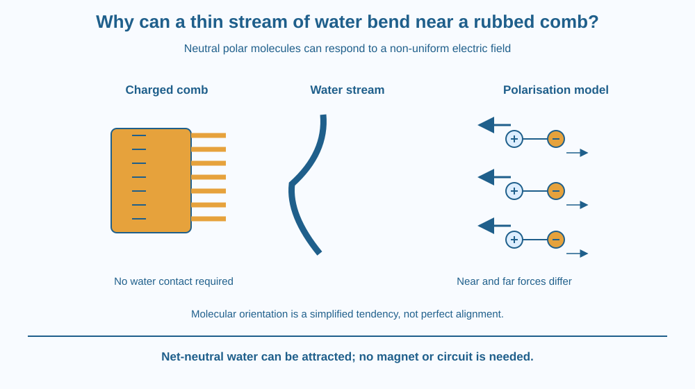

Explain how a charged comb can attract a thin stream of electrically neutral water. Distinguish net charge from a polar molecule and use unequal forces in a non-uniform electric field. Avoid claiming that water must acquire the comb's charge or contain a magnet to bend.
A dry plastic comb is rubbed with a suitable cloth and brought near a thin stream of water without touching it. The stream may bend toward the comb. Before the comb approaches, the water need not carry a large net electrical charge.
How can neutral material respond to an electric influence? Neutral does not mean every part of a molecule has exactly the same charge distribution. Water's uneven internal distribution and its response to a nearby field help explain the attraction.
The observation can be weak in humid conditions or with unsuitable materials, so a failed trial needs careful interpretation.
Rubbing some material pairs transfers electrons between their surfaces. One object can gain a net negative charge while the other loses electrons and becomes relatively positive. The direction and amount depend on the materials and conditions.
A charged comb creates an electric field around it. This field can exert forces on charges within nearby matter even without direct contact. The field strength varies with location, becoming different across the region near the comb.
A water molecule has a polar charge distribution: one region is relatively negative and another relatively positive, even though the whole molecule is electrically neutral. This molecular polarity does not mean water consists of separate visible positive and negative drops.
In an electric field, these molecular dipoles tend to orient. The side attracted toward the comb is favoured nearer it, while the other side is slightly farther away. The detailed motion includes thermal disorder, so the drawing of perfectly aligned molecules is an idealisation.
Because the field is non-uniform, the nearer and farther parts do not experience equal force magnitudes. The resulting effect can produce a net attraction toward the stronger-field region near the comb. This helps pull the stream sideways.
The model can work with either sign of comb charge. The orientation of the water's dipoles changes accordingly, so the net response does not require memorising that a comb must always have one particular sign.
The stream's motion also depends on its flow rate, width and distance from the comb. A strong thick stream may show less visible deflection than a thin one. Humidity and wet surfaces can allow charge to leak away, reducing the effect.
This is not a magnetic-compass effect, a circuit supplying current or a lightning discharge. The lesson focuses on polarisation and attraction of neutral material in a changing electric field. No spark or contact between the comb and water is needed for the intended demonstration.
Draw water molecules as paired positive and negative regions with zero overall charge. Place a charged comb beside them and show the dipoles tending to orient toward its field.
Make the near-side force arrow slightly larger than the opposing far-side arrow. Label this difference as a result of the field varying with position. If the two arrows were exactly equal and opposite on a perfectly oriented pair in a uniform field, the simple net-translation explanation would fail.
Reverse the comb's sign in a second drawing and reverse the dipole orientation. Keep the attraction toward the comb. This checks that the model explains a mechanism rather than relying on one memorised colour arrangement.
The SVG shows a charged comb beside a thin water stream. A magnified inset contains neutral polar molecules tending to align in the comb's non-uniform field. Force arrows distinguish the near and far sides.
The overall stream curves toward the comb without touching it. Labels identify net comb charge, molecular polarity and the stronger nearby field region. The plus and minus symbols are conceptual markers, not visible features of real water.
The diagram does not imply that every molecule aligns perfectly or that all the water gains the same net charge as the comb. It illustrates an attraction mechanism under suitable conditions.

Static effects can be easier to notice with dry materials and less humid air. On a damp monsoon day, charge may leak away more readily, so a classroom result can differ from a dry-weather example without invalidating the general mechanism.
The comb-water demonstration helps distinguish electrical effects on neutral materials from the idea that only already charged objects can respond. It is one illustration of how internal charge distribution matters.
This activity uses no battery, wall outlet or electrical appliance. A comb should never be used to investigate wires, sockets or powered equipment. The small static-charge demonstration is entirely separate from household electrical systems.
Use a dry plastic comb, a dry cloth and a very thin stream of tap water with adult permission. Keep all electrical appliances away and avoid wasting water. A paper model is an alternative.
Do not expect a universal distance or deflection angle. Record the materials and conditions. A weak result may reflect charge leakage, unsuitable materials or stream conditions; do not invent a positive observation simply because the textbook picture shows one.
Why does neutral not mean unaffected by every electric field? Use the distinction between total charge and internal distribution in your answer.
Now reverse the comb's sign in the model. Explain how molecular orientation can change while the overall attraction remains toward the stronger-field region. This tests the explanation more strongly than repeating a single diagram with fixed plus and minus labels.
What does a polar water molecule have?
Answer: B — The molecule has relatively positive and negative regions while remaining neutral overall.
Why can the comb produce a net attraction on the stream?
Answer: C — Near and far regions can experience different force magnitudes in the varying field.
The effect is weak on a humid day. What is a plausible explanation?
Answer: A — Humidity and wet surfaces can reduce the stored static charge and weaken the effect.
Create a three-stage explanation showing electron transfer during rubbing, the field around the comb and the response of neutral polar water. Keep each stage distinct.
Add one labelled limitation for the real activity, such as humidity or stream thickness. Your explanation must not use a hidden magnet, a circuit current through the stream or the claim that rubbing creates electric charge from nothing.
A material can have zero total charge and still contain a charge distribution that responds strongly to its surroundings. Summing the whole molecule is not the same as describing every region within it. This is why neutral matter can participate in electrical interactions without first becoming a visibly charged object.
A charged comb can orient polar water molecules; unequal forces in its non-uniform field can attract the neutral stream toward it.